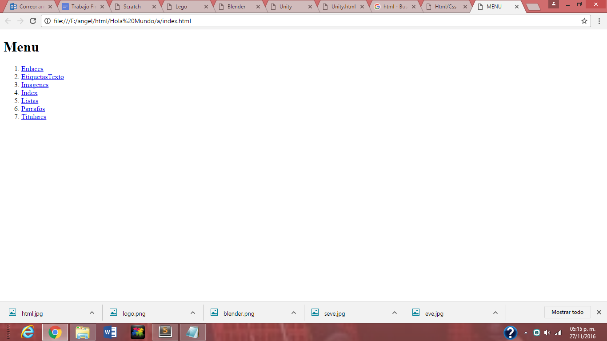

Html/Css

Mi pagina en html
Mi pagina en html la desarroye individualmente, realize diferentes paginas con diferentes estilos
Sus principales caracteristicas son:
- Realizar una pagina para cada tema visto en clase.
- Una pagina de inicio.
- Enlaces de la pagina de inicio hacia las las demas paginas.
- Imagenes en las paginas.

En mi opinion crear paginas web fue divertido, saber como son creadas es muy interesante.